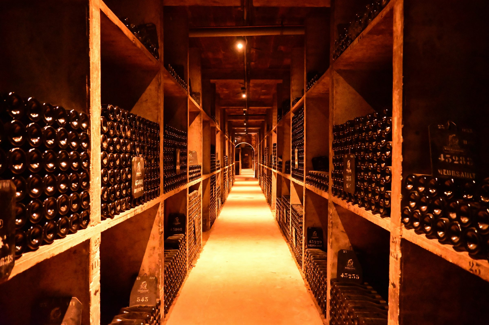
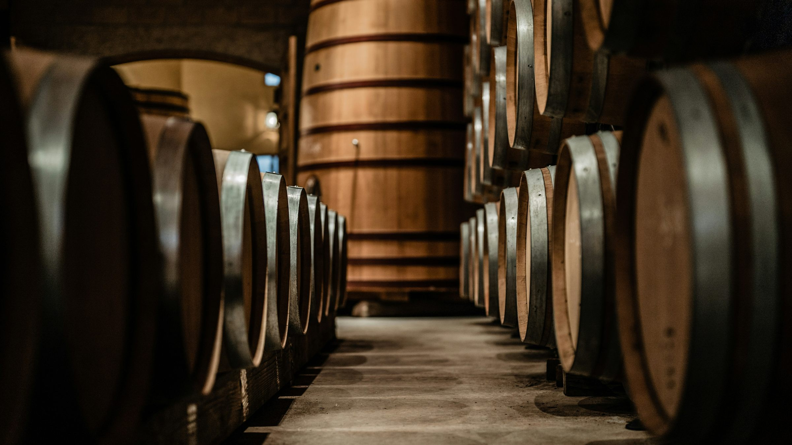

· Dossier transversal
Aides aux vignerons : de l’installation à l’arrachage
62 fiches sourcées : installation, investissements, PAC, bio, emploi, risques et transmission. Recherche dédiée par étape et territoire.
Explorer les aides →Conformité & échéances
Registre phytosanitaire numérique, facturation électronique, réforme européenne : le calendrier réglementaire du vigneron évolue vite. Nous suivons ces échéances pour vous et les expliquons simplement, avec ce qu'il faut faire et pour quand.
· Dossier transversal
62 fiches sourcées : installation, investissements, PAC, bio, emploi, risques et transmission. Recherche dédiée par étape et territoire.
Explorer les aides →
Destination, destinataire et régime de droits : choisissez le parcours adapté. CRD nationales, vente à distance et formalités GAMMA 2 distinguées.
Lire l'article →Vente directe, œnotourisme, recommandation, actions locales et 6–8° : comparer les leviers commerciaux du vin et décider quels essais méritent un investissement.
Lire l’article →Vin et clientèles adultes : pourquoi l’âge ne suffit pas à construire une offre, et comment tester des parcours accessibles sans promettre une demande universelle.
Lire l’article →Le vin low-alcool à 6–8° mérite des tests ciblés. Ce que montrent les études françaises No/Low, leurs limites et les règles d’étiquetage de 2026 à 2027.
Lire l’article →Marchés, rencontres et partenariats : évaluer les activations locales du vin avec leurs coûts complets, leur effet supplémentaire et leur suivi commercial.
Lire l’article →Bouche-à-oreille, avis et réseaux sociaux : comment tester la recommandation sociale du vin sans confondre visibilité, ventes et preuve de rentabilité.
Lire l’article →L’œnotourisme progresse en France. Analyse critique des chiffres, des biais d’enquête et du coût réel d’une offre de visite pour un domaine viticole.
Lire l’article →La vente directe de vin mérite un investissement mesuré : coûts commerciaux, temps de travail, réachat et limites des données disponibles en France.
Lire l’article →Identifiez votre qualité de déclarant et votre portail avant de retenir une date. Procédure, 23 fiches d’interprofessions, checklist et sources.
Lire l'article →Le règlement européen sur les emballages s'applique depuis le 12 août 2026. Fabricant, réemploi, étiquette de tri, recyclabilité : ce qui concerne votre domaine et ce dont le vin est dispensé.
Lire l'article →Registre phyto, fertilisation, interventions à la parcelle : la conditionnalité PAC exige des enregistrements précis, conservés cinq campagnes. Ce qu'un contrôleur vient vérifier.
Lire l'article →L'indice de fréquence de traitement mesure l'intensité de vos passages phyto. Formule, doses de référence, usages (HVE, MAEC) et leviers concrets pour le réduire sans risquer la récolte.
Lire l'article →Mention obligatoire sur chaque bouteille, le numéro de lot est aussi votre assurance en cas de rappel produit. Comment le construire, l'enregistrer et le relier à vos registres.
Lire l'article →
Tout détenteur de vin doit tenir un registre des entrées, des sorties et des manipulations. Ce que les règlements européens exigent vraiment, et comment le tenir sans y passer ses soirées.
Lire l'article →Entrepositaires agréés : dépôt au plus tard le 10 du mois suivant, avec le report prévu pour un jour non ouvré. Données, contrôles et confirmation du dépôt.
Lire l'article →Le registre papier vit sa dernière campagne : à partir de 2027, chaque traitement devra être enregistré dans un format numérique lisible par machine. Qui est concerné, quels formats, quel calendrier de transition.
Lire l'article →Depuis le 1ᵉʳ septembre 2026, toute entreprise doit pouvoir recevoir des factures électroniques. Au 1ᵉʳ septembre 2027, les TPE et PME devront aussi en émettre. Ce que cela change pour vos ventes aux professionnels.
Lire l'article →Autorisations de replantation portées à 8 ans, catégories « sans alcool » harmonisées, mentions d'étiquetage simplifiées : la réforme adoptée fin 2025 s'applique, avec une échéance au 31 décembre 2026.
Lire l'article →La conformité, sans la paperasse
Registre phytosanitaire numérique, DRM, traçabilité des lots : Mon Chai transforme ce que vous saisissez au quotidien en registres conformes, prêts à exporter. Testez gratuitement : jusqu'au 31 décembre 2026 pour toute inscription jusqu’au 31 octobre, 30 jours pour toute inscription à partir du 1er novembre.